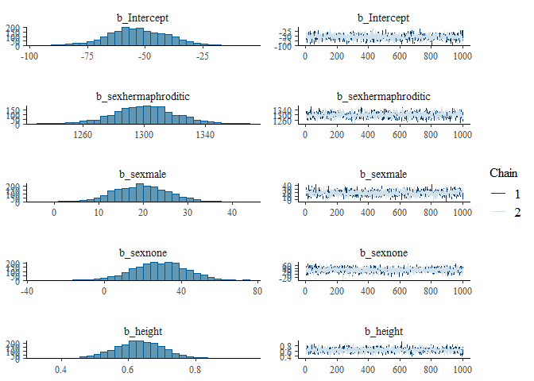
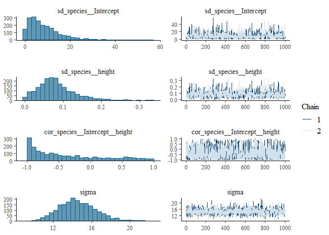

VarDecomp can be used for variance decomposition, model fit checks and output visualizations of brms models.
Installation
You can install the development version of VarDecomp like so:
devtools::install_github("gabewinter/VarDecomp")
#> Downloading GitHub repo gabewinter/VarDecomp@HEAD
#> parallelly (1.36.0 -> 1.37.1 ) [CRAN]
#> listenv (0.9.0 -> 0.9.1 ) [CRAN]
#> digest (0.6.33 -> 0.6.35 ) [CRAN]
#> globals (0.16.2 -> 0.16.3 ) [CRAN]
#> future (1.33.0 -> 1.33.2 ) [CRAN]
#> vctrs (0.6.3 -> 0.6.5 ) [CRAN]
#> stringi (1.7.12 -> 1.8.4 ) [CRAN]
#> rlang (1.1.1 -> 1.1.3 ) [CRAN]
#> munsell (0.5.0 -> 0.5.1 ) [CRAN]
#> lifecycle (1.0.3 -> 1.0.4 ) [CRAN]
#> labeling (0.4.2 -> 0.4.3 ) [CRAN]
#> glue (1.6.2 -> 1.7.0 ) [CRAN]
#> farver (2.1.1 -> 2.1.2 ) [CRAN]
#> cli (3.6.1 -> 3.6.2 ) [CRAN]
#> scales (1.2.1 -> 1.3.0 ) [CRAN]
#> coda (0.19-4 -> 0.19-4.1 ) [CRAN]
#> stringr (1.5.0 -> 1.5.1 ) [CRAN]
#> mvtnorm (1.2-2 -> 1.2-5 ) [CRAN]
#> utf8 (1.2.3 -> 1.2.4 ) [CRAN]
#> backports (1.4.1 -> 1.5.0 ) [CRAN]
#> fansi (1.0.4 -> 1.0.6 ) [CRAN]
#> Rcpp (1.0.11 -> 1.0.12 ) [CRAN]
#> plyr (1.8.8 -> 1.8.9 ) [CRAN]
#> matrixStats (1.0.0 -> 1.3.0 ) [CRAN]
#> distribut... (0.3.2 -> 0.4.0 ) [CRAN]
#> tensorA (0.36.2 -> 0.36.2.1 ) [CRAN]
#> checkmate (2.2.0 -> 2.3.1 ) [CRAN]
#> withr (2.5.0 -> 3.0.0 ) [CRAN]
#> gtable (0.3.3 -> 0.3.5 ) [CRAN]
#> tidyselect (1.2.0 -> 1.2.1 ) [CRAN]
#> posterior (1.4.1 -> 1.5.0 ) [CRAN]
#> ggridges (0.5.4 -> 0.5.6 ) [CRAN]
#> ggplot2 (3.4.3 -> 3.5.1 ) [CRAN]
#> dplyr (1.1.2 -> 1.1.4 ) [CRAN]
#> desc (1.4.2 -> 1.4.3 ) [CRAN]
#> ps (1.7.5 -> 1.7.6 ) [CRAN]
#> jsonlite (1.8.7 -> 1.8.8 ) [CRAN]
#> processx (3.8.2 -> 3.8.4 ) [CRAN]
#> callr (3.7.3 -> 3.7.6 ) [CRAN]
#> BH (1.81.0-1 -> 1.84.0-0 ) [CRAN]
#> RcppEigen (0.3.3.9.3 -> 0.3.4.0.0) [CRAN]
#> QuickJSR (1.1.0 -> 1.1.3 ) [CRAN]
#> pkgbuild (1.4.2 -> 1.4.4 ) [CRAN]
#> loo (2.6.0 -> 2.7.0 ) [CRAN]
#> StanHeaders (2.32.5 -> 2.32.8 ) [CRAN]
#> nleqslv (3.3.4 -> 3.3.5 ) [CRAN]
#> future.apply (NA -> 1.11.2 ) [CRAN]
#> bayesplot (1.10.0 -> 1.11.1 ) [CRAN]
#> rstantools (2.3.1 -> 2.4.0 ) [CRAN]
#> rstan (2.32.5 -> 2.32.6 ) [CRAN]
#> brms (2.19.0 -> 2.21.0 ) [CRAN]
#> Installing 51 packages: parallelly, listenv, digest, globals, future, vctrs, stringi, rlang, munsell, lifecycle, labeling, glue, farver, cli, scales, coda, stringr, mvtnorm, utf8, backports, fansi, Rcpp, plyr, matrixStats, distributional, tensorA, checkmate, withr, gtable, tidyselect, posterior, ggridges, ggplot2, dplyr, desc, ps, jsonlite, processx, callr, BH, RcppEigen, QuickJSR, pkgbuild, loo, StanHeaders, nleqslv, future.apply, bayesplot, rstantools, rstan, brms
#> Installing packages into 'C:/Users/Gabe/AppData/Local/R/win-library/4.3'
#> (as 'lib' is unspecified)
#>
#> There is a binary version available but the source version is later:
#> binary source needs_compilation
#> backports 1.4.1 1.5.0 TRUE
#>
#> package 'parallelly' successfully unpacked and MD5 sums checked
#> package 'listenv' successfully unpacked and MD5 sums checked
#> package 'digest' successfully unpacked and MD5 sums checked
#> Warning: cannot remove prior installation of package 'digest'
#> Warning in file.copy(savedcopy, lib, recursive = TRUE): problem copying
#> C:\Users\Gabe\AppData\Local\R\win-library\4.3\00LOCK\digest\libs\x64\digest.dll
#> to C:\Users\Gabe\AppData\Local\R\win-library\4.3\digest\libs\x64\digest.dll:
#> Permission denied
#> Warning: restored 'digest'
#> package 'globals' successfully unpacked and MD5 sums checked
#> package 'future' successfully unpacked and MD5 sums checked
#> package 'vctrs' successfully unpacked and MD5 sums checked
#> Warning: cannot remove prior installation of package 'vctrs'
#> Warning in file.copy(savedcopy, lib, recursive = TRUE): problem copying
#> C:\Users\Gabe\AppData\Local\R\win-library\4.3\00LOCK\vctrs\libs\x64\vctrs.dll
#> to C:\Users\Gabe\AppData\Local\R\win-library\4.3\vctrs\libs\x64\vctrs.dll:
#> Permission denied
#> Warning: restored 'vctrs'
#> package 'stringi' successfully unpacked and MD5 sums checked
#> Warning: cannot remove prior installation of package 'stringi'
#> Warning in file.copy(savedcopy, lib, recursive = TRUE): problem copying
#> C:\Users\Gabe\AppData\Local\R\win-library\4.3\00LOCK\stringi\libs\x64\stringi.dll
#> to C:\Users\Gabe\AppData\Local\R\win-library\4.3\stringi\libs\x64\stringi.dll:
#> Permission denied
#> Warning: restored 'stringi'
#> package 'rlang' successfully unpacked and MD5 sums checked
#> Warning: cannot remove prior installation of package 'rlang'
#> Warning in file.copy(savedcopy, lib, recursive = TRUE): problem copying
#> C:\Users\Gabe\AppData\Local\R\win-library\4.3\00LOCK\rlang\libs\x64\rlang.dll
#> to C:\Users\Gabe\AppData\Local\R\win-library\4.3\rlang\libs\x64\rlang.dll:
#> Permission denied
#> Warning: restored 'rlang'
#> package 'munsell' successfully unpacked and MD5 sums checked
#> package 'lifecycle' successfully unpacked and MD5 sums checked
#> package 'labeling' successfully unpacked and MD5 sums checked
#> package 'glue' successfully unpacked and MD5 sums checked
#> Warning: cannot remove prior installation of package 'glue'
#> Warning in file.copy(savedcopy, lib, recursive = TRUE): problem copying
#> C:\Users\Gabe\AppData\Local\R\win-library\4.3\00LOCK\glue\libs\x64\glue.dll to
#> C:\Users\Gabe\AppData\Local\R\win-library\4.3\glue\libs\x64\glue.dll:
#> Permission denied
#> Warning: restored 'glue'
#> package 'farver' successfully unpacked and MD5 sums checked
#> Warning: cannot remove prior installation of package 'farver'
#> Warning in file.copy(savedcopy, lib, recursive = TRUE): problem copying
#> C:\Users\Gabe\AppData\Local\R\win-library\4.3\00LOCK\farver\libs\x64\farver.dll
#> to C:\Users\Gabe\AppData\Local\R\win-library\4.3\farver\libs\x64\farver.dll:
#> Permission denied
#> Warning: restored 'farver'
#> package 'cli' successfully unpacked and MD5 sums checked
#> Warning: cannot remove prior installation of package 'cli'
#> Warning in file.copy(savedcopy, lib, recursive = TRUE): problem copying
#> C:\Users\Gabe\AppData\Local\R\win-library\4.3\00LOCK\cli\libs\x64\cli.dll to
#> C:\Users\Gabe\AppData\Local\R\win-library\4.3\cli\libs\x64\cli.dll: Permission
#> denied
#> Warning: restored 'cli'
#> package 'scales' successfully unpacked and MD5 sums checked
#> package 'coda' successfully unpacked and MD5 sums checked
#> package 'stringr' successfully unpacked and MD5 sums checked
#> package 'mvtnorm' successfully unpacked and MD5 sums checked
#> Warning: cannot remove prior installation of package 'mvtnorm'
#> Warning in file.copy(savedcopy, lib, recursive = TRUE): problem copying
#> C:\Users\Gabe\AppData\Local\R\win-library\4.3\00LOCK\mvtnorm\libs\x64\mvtnorm.dll
#> to C:\Users\Gabe\AppData\Local\R\win-library\4.3\mvtnorm\libs\x64\mvtnorm.dll:
#> Permission denied
#> Warning: restored 'mvtnorm'
#> package 'utf8' successfully unpacked and MD5 sums checked
#> Warning: cannot remove prior installation of package 'utf8'
#> Warning in file.copy(savedcopy, lib, recursive = TRUE): problem copying
#> C:\Users\Gabe\AppData\Local\R\win-library\4.3\00LOCK\utf8\libs\x64\utf8.dll to
#> C:\Users\Gabe\AppData\Local\R\win-library\4.3\utf8\libs\x64\utf8.dll:
#> Permission denied
#> Warning: restored 'utf8'
#> package 'fansi' successfully unpacked and MD5 sums checked
#> Warning: cannot remove prior installation of package 'fansi'
#> Warning in file.copy(savedcopy, lib, recursive = TRUE): problem copying
#> C:\Users\Gabe\AppData\Local\R\win-library\4.3\00LOCK\fansi\libs\x64\fansi.dll
#> to C:\Users\Gabe\AppData\Local\R\win-library\4.3\fansi\libs\x64\fansi.dll:
#> Permission denied
#> Warning: restored 'fansi'
#> package 'Rcpp' successfully unpacked and MD5 sums checked
#> Warning: cannot remove prior installation of package 'Rcpp'
#> Warning in file.copy(savedcopy, lib, recursive = TRUE): problem copying
#> C:\Users\Gabe\AppData\Local\R\win-library\4.3\00LOCK\Rcpp\libs\x64\Rcpp.dll to
#> C:\Users\Gabe\AppData\Local\R\win-library\4.3\Rcpp\libs\x64\Rcpp.dll:
#> Permission denied
#> Warning: restored 'Rcpp'
#> package 'plyr' successfully unpacked and MD5 sums checked
#> Warning: cannot remove prior installation of package 'plyr'
#> Warning in file.copy(savedcopy, lib, recursive = TRUE): problem copying
#> C:\Users\Gabe\AppData\Local\R\win-library\4.3\00LOCK\plyr\libs\x64\plyr.dll to
#> C:\Users\Gabe\AppData\Local\R\win-library\4.3\plyr\libs\x64\plyr.dll:
#> Permission denied
#> Warning: restored 'plyr'
#> package 'matrixStats' successfully unpacked and MD5 sums checked
#> Warning: cannot remove prior installation of package 'matrixStats'
#> Warning in file.copy(savedcopy, lib, recursive = TRUE): problem copying
#> C:\Users\Gabe\AppData\Local\R\win-library\4.3\00LOCK\matrixStats\libs\x64\matrixStats.dll
#> to
#> C:\Users\Gabe\AppData\Local\R\win-library\4.3\matrixStats\libs\x64\matrixStats.dll:
#> Permission denied
#> Warning: restored 'matrixStats'
#> package 'distributional' successfully unpacked and MD5 sums checked
#> package 'tensorA' successfully unpacked and MD5 sums checked
#> Warning: cannot remove prior installation of package 'tensorA'
#> Warning in file.copy(savedcopy, lib, recursive = TRUE): problem copying
#> C:\Users\Gabe\AppData\Local\R\win-library\4.3\00LOCK\tensorA\libs\x64\tensorA.dll
#> to C:\Users\Gabe\AppData\Local\R\win-library\4.3\tensorA\libs\x64\tensorA.dll:
#> Permission denied
#> Warning: restored 'tensorA'
#> package 'checkmate' successfully unpacked and MD5 sums checked
#> Warning: cannot remove prior installation of package 'checkmate'
#> Warning in file.copy(savedcopy, lib, recursive = TRUE): problem copying
#> C:\Users\Gabe\AppData\Local\R\win-library\4.3\00LOCK\checkmate\libs\x64\checkmate.dll
#> to
#> C:\Users\Gabe\AppData\Local\R\win-library\4.3\checkmate\libs\x64\checkmate.dll:
#> Permission denied
#> Warning: restored 'checkmate'
#> package 'withr' successfully unpacked and MD5 sums checked
#> package 'gtable' successfully unpacked and MD5 sums checked
#> package 'tidyselect' successfully unpacked and MD5 sums checked
#> package 'posterior' successfully unpacked and MD5 sums checked
#> package 'ggridges' successfully unpacked and MD5 sums checked
#> package 'ggplot2' successfully unpacked and MD5 sums checked
#> package 'dplyr' successfully unpacked and MD5 sums checked
#> Warning: cannot remove prior installation of package 'dplyr'
#> Warning in file.copy(savedcopy, lib, recursive = TRUE): problem copying
#> C:\Users\Gabe\AppData\Local\R\win-library\4.3\00LOCK\dplyr\libs\x64\dplyr.dll
#> to C:\Users\Gabe\AppData\Local\R\win-library\4.3\dplyr\libs\x64\dplyr.dll:
#> Permission denied
#> Warning: restored 'dplyr'
#> package 'desc' successfully unpacked and MD5 sums checked
#> package 'ps' successfully unpacked and MD5 sums checked
#> Warning: cannot remove prior installation of package 'ps'
#> Warning in file.copy(savedcopy, lib, recursive = TRUE): problem copying
#> C:\Users\Gabe\AppData\Local\R\win-library\4.3\00LOCK\ps\libs\x64\ps.dll to
#> C:\Users\Gabe\AppData\Local\R\win-library\4.3\ps\libs\x64\ps.dll: Permission
#> denied
#> Warning: restored 'ps'
#> package 'jsonlite' successfully unpacked and MD5 sums checked
#> Warning: cannot remove prior installation of package 'jsonlite'
#> Warning in file.copy(savedcopy, lib, recursive = TRUE): problem copying
#> C:\Users\Gabe\AppData\Local\R\win-library\4.3\00LOCK\jsonlite\libs\x64\jsonlite.dll
#> to
#> C:\Users\Gabe\AppData\Local\R\win-library\4.3\jsonlite\libs\x64\jsonlite.dll:
#> Permission denied
#> Warning: restored 'jsonlite'
#> package 'processx' successfully unpacked and MD5 sums checked
#> Warning: cannot remove prior installation of package 'processx'
#> Warning in file.copy(savedcopy, lib, recursive = TRUE): problem copying
#> C:\Users\Gabe\AppData\Local\R\win-library\4.3\00LOCK\processx\libs\x64\processx.dll
#> to
#> C:\Users\Gabe\AppData\Local\R\win-library\4.3\processx\libs\x64\processx.dll:
#> Permission denied
#> Warning: restored 'processx'
#> package 'callr' successfully unpacked and MD5 sums checked
#> package 'BH' successfully unpacked and MD5 sums checked
#> package 'RcppEigen' successfully unpacked and MD5 sums checked
#> package 'QuickJSR' successfully unpacked and MD5 sums checked
#> Warning: cannot remove prior installation of package 'QuickJSR'
#> Warning in file.copy(savedcopy, lib, recursive = TRUE): problem copying
#> C:\Users\Gabe\AppData\Local\R\win-library\4.3\00LOCK\QuickJSR\libs\x64\QuickJSR.dll
#> to
#> C:\Users\Gabe\AppData\Local\R\win-library\4.3\QuickJSR\libs\x64\QuickJSR.dll:
#> Permission denied
#> Warning: restored 'QuickJSR'
#> package 'pkgbuild' successfully unpacked and MD5 sums checked
#> package 'loo' successfully unpacked and MD5 sums checked
#> package 'StanHeaders' successfully unpacked and MD5 sums checked
#> Warning: cannot remove prior installation of package 'StanHeaders'
#> Warning in file.copy(savedcopy, lib, recursive = TRUE): problem copying
#> C:\Users\Gabe\AppData\Local\R\win-library\4.3\00LOCK\StanHeaders\libs\x64\StanHeaders.dll
#> to
#> C:\Users\Gabe\AppData\Local\R\win-library\4.3\StanHeaders\libs\x64\StanHeaders.dll:
#> Permission denied
#> Warning: restored 'StanHeaders'
#> package 'nleqslv' successfully unpacked and MD5 sums checked
#> package 'future.apply' successfully unpacked and MD5 sums checked
#> package 'bayesplot' successfully unpacked and MD5 sums checked
#> package 'rstantools' successfully unpacked and MD5 sums checked
#> package 'rstan' successfully unpacked and MD5 sums checked
#> Warning: cannot remove prior installation of package 'rstan'
#> Warning in file.copy(savedcopy, lib, recursive = TRUE): problem copying
#> C:\Users\Gabe\AppData\Local\R\win-library\4.3\00LOCK\rstan\libs\x64\rstan.dll
#> to C:\Users\Gabe\AppData\Local\R\win-library\4.3\rstan\libs\x64\rstan.dll:
#> Permission denied
#> Warning: restored 'rstan'
#> package 'brms' successfully unpacked and MD5 sums checked
#>
#> The downloaded binary packages are in
#> C:\Users\Gabe\AppData\Local\Temp\Rtmp0EaISb\downloaded_packages
#> installing the source package 'backports'
#> Warning in i.p(...): installation of package 'backports' had non-zero exit
#> status
#> ── R CMD build ─────────────────────────────────────────────────────────────────
#> checking for file 'C:\Users\Gabe\AppData\Local\Temp\Rtmp0EaISb\remotes3e884c9365a4\gabewinter-VarDecomp-ecdbef7/DESCRIPTION' ... checking for file 'C:\Users\Gabe\AppData\Local\Temp\Rtmp0EaISb\remotes3e884c9365a4\gabewinter-VarDecomp-ecdbef7/DESCRIPTION' ... ✔ checking for file 'C:\Users\Gabe\AppData\Local\Temp\Rtmp0EaISb\remotes3e884c9365a4\gabewinter-VarDecomp-ecdbef7/DESCRIPTION' (398ms)
#> ─ preparing 'VarDecomp': (348ms)
#> checking DESCRIPTION meta-information ... checking DESCRIPTION meta-information ... ✔ checking DESCRIPTION meta-information
#> ─ checking for LF line-endings in source and make files and shell scripts
#> ─ checking for empty or unneeded directories
#> ─ building 'VarDecomp_0.0.0.9000.tar.gz'
#>
#>
#> Installing package into 'C:/Users/Gabe/AppData/Local/R/win-library/4.3'
#> (as 'lib' is unspecified)Documentation
Full documentation website on: https://gabewinter.github.io/VarDecomp
Example
library(VarDecomp)
md = dplyr::starwars
mod = brms_model(Chainset = "long",
Response = "mass",
FixedEffect = c("sex","height"),
RandomEffect = "species",
RandomSlope = "height",
Family = "gaussian",
Data = md,
Seed = 0405)
#> [1] "No problem 👏"
#> Warning: Rows containing NAs were excluded from the model.
#> Compiling Stan program...
#> Start sampling
print(mod)
#> Family: gaussian
#> Links: mu = identity; sigma = identity
#> Formula: mass ~ sex + height + (1 + height | species)
#> Data: Data (Number of observations: 58)
#> Draws: 2 chains, each with iter = 30000; warmup = 15000; thin = 15;
#> total post-warmup draws = 2000
#>
#> Multilevel Hyperparameters:
#> ~species (Number of levels: 31)
#> Estimate Est.Error l-95% CI u-95% CI Rhat Bulk_ESS
#> sd(Intercept) 8.64 7.44 0.31 28.27 1.00 2065
#> sd(height) 0.08 0.05 0.01 0.21 1.00 1801
#> cor(Intercept,height) -0.36 0.57 -0.99 0.86 1.00 1744
#> Tail_ESS
#> sd(Intercept) 1944
#> sd(height) 1754
#> cor(Intercept,height) 1739
#>
#> Regression Coefficients:
#> Estimate Est.Error l-95% CI u-95% CI Rhat Bulk_ESS Tail_ESS
#> Intercept -53.20 13.15 -80.03 -27.94 1.00 1856 1550
#> sexhermaphroditic 1300.65 20.01 1260.37 1340.48 1.00 1838 1582
#> sexmale 19.45 6.48 6.46 32.05 1.00 1936 1977
#> sexnone 28.86 14.05 1.31 55.94 1.00 1927 1688
#> height 0.63 0.07 0.49 0.78 1.00 2072 1690
#>
#> Further Distributional Parameters:
#> Estimate Est.Error l-95% CI u-95% CI Rhat Bulk_ESS Tail_ESS
#> sigma 14.54 1.93 11.12 18.66 1.00 1986 1796
#>
#> Draws were sampled using sampling(NUTS). For each parameter, Bulk_ESS
#> and Tail_ESS are effective sample size measures, and Rhat is the potential
#> scale reduction factor on split chains (at convergence, Rhat = 1).
plot(mod)